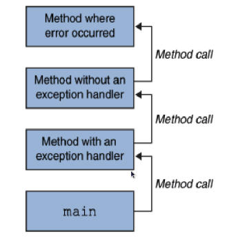

Created by <Academia de Código_>
The text-based version
Text based version
Solution using Inheritance
Our solution isn't ideal...
An Interface is a completely abstract type that defines the behaviours a class must implement.
/**
* Destroyable.java
*/
// all methods are abstract
public interface Destroyable {
public abstract void hit(int damage);
public abstract boolean isDestroyed();
}
/**
* Barrel.java
*/
// when implementing an interface you need to override all methods
public class Barrel extends GameObject implements Destroyable {
@Override
public boolean isDestroyed() {
// implement behaviour
}
@Override
public void hit(int points) {
// implement behaviour
}
}
public class SniperRifle {
private int bulletDamage = 1;
private final float HIT_PROB = 0.3f;
// declare a parameter of type Destroyable
public void shoot(Destroyable target) {
if(Math.random() < HIT_PROB) {
// call the method hit on the destroyable object
target.hit(bulletDamage);
System.out.println("It's a hit!");
} else {
System.out.println("It's a miss!");
}
}
}
Feature that helps with encapsulation
Determine classes, methods and fields access level.
| Modifier | Accessibility |
|---|---|
| public | From everywhere |
| protected | Same package and subclasses |
| default (aka package-private) | Same package |
| private | Within the class |
| Level | Possible Modifiers |
|---|---|
| Top Level (aka class level) |
public
default |
| Member Level |
public
protected default private |
Use the most restrictive access level possible.
Avoid public fields except for constants.
Protected and default might help with sub-classing.
GFX classes representing drawable entities:
Simple GFX classes implement one or more interfaces:
Shapes are drawn to a canvas on a dedicated thread
Rectangle rect = new Rectangle(0, 0, 400, 400);
rect.setColor(Color.RED);
rect.fill();

The canvas will expand its size when required. The canvas always preserves a right and lower margin of 10px
The class that handles keyboard events should:
Your code should:
The class that handles mouse events should:
Your code should:
Agnostic to Graphics Library

Agnostic to Graphics Library
An exception is an abnormal event which occurs during the execution of a program that disrupts the normal
flow
of the program instructions
/**
* Main.java
*/
public static void main(String[] args) {
String[] names = new String[] { "Ze" };
System.out.println("Hello " + names[1].toUpperCase());
}
Exception in thread "main" java.lang.ArrayIndexOutOfBoundsException: 1
at org.academiadecodigo.exceptions.Main.main(Main.java:14)
at sun.reflect.NativeMethodAccessorImpl.invoke0(Native Method)
at sun.reflect.NativeMethodAccessorImpl.invoke(NativeMethodAccessorImpl.java:39)
at sun.reflect.DelegatingMethodAccessorImpl.invoke(DelegatingMethodAccessorImpl.java:25)
at java.lang.reflect.Method.invoke(Method.java:597)
at com.intellij.rt.execution.application.AppMain.main(AppMain.java:140)
Not catching an exception crashes the program.
/**
* Main.java
*/
public static void main(String[] args) {
String[] names = new String[] { "Ze" };
try { // try to run this
System.out.println("Hello " + names[1].toUpperCase());
} catch (Exception e) { // but if it fails run this code instead
System.out.println("Ze is not here");
}
}
Please note that not all exceptions should be caught.

Only the checked exceptions should be caught.
If the caught exception cannot be handled correctly by the method, it can bubble up to another method
Some method up the call chain will catch the exception

public void method1() {
try {
method2();
} catch (Exception ex) {
doErrorProcessing(ex); // this method will handle the exception
}
}
public void method2() throws Exception{
method3();
}
public void method3() throws Exception {
// this method returns true if able to read the file
boolean readFile = readFile("VerySpecialFile");
if(!readFile) {
throw new Exception();
}
}
When an exception is thrown we can choose to deal with it or pass it to the calling method
/**
* Main.java
*/
public static void main(String[] args) {
String[] names = new String[] { "Ze" };
try { // try to run this
System.out.println("Hello " + names[1].toUpperCase());
} catch (Exception e) { // but if it fails run this code instead
System.out.println("Ze is not here");
} finally { // and this will always run
System.out.println("Either way I will run whatever is in here...");
}
}
The finally block always runs, even if the method is returning inside the try or catch.
// process of reading a file
try {
open(file);
determineSize(file);
allocateMemory(memoryNeeded);
read(file);
close(file);
} catch (FileOpenException ex) {
// something went wrong while opening the file
handleOpenException();
} catch (SizeDeterminationException ex) {
// something went wrong while determining the file size
handleSizeDeterminationException();
} catch (MemoryAllocationException ex) {
// something went wrong while trying to allocate memory
handleMemoryAllocationException();
} catch (ReadException ex) {
// something went wrong while trying to read the file
handleReadException();
} catch (Exception ex) {
// something went wrong with the file
handleException(ex);
}
The less specific exceptions must be at the end.
/**
* A custom exception
*/
public class CustomException extends Exception {
public CustomException() {
}
public CustomException(String s) {
super(s);
}
}
Usually the name of the exception should be self-explanatory, but a message can be added to provide additional information.
/**
* Throwing a custom exception
*/
public class MyClass {
public void someRiskyMethod() throws CustomException {
if("something terrible happens") {
throw new CustomException("Brace yourselves an exception is coming");
}
}
}
The method throws the exception
when a specified condition occurs.
/**
* Catching the custom exception
*/
public class Main {
public static void main(String[] args) {
MyClass myClass = new MyClass();
try {
myClass.someRiskyMethod();
} catch (CustomException ex) {
System.out.println(ex.getMessage()); // prints the exception message
}
}
}
The calling method handles the exception and deals with it.

Used to hold any number of objects. Arrays are built in the Java programming language and have been our natural choice, but they have obvious limitations:
What we need is a dynamic container!
and the add method
Implement remaining methods until all tests pass
No. What does this mean?

The type parameter section, delimited by angle brackets ( <>) follows the class name and specifies the type variables
The Box class wraps any type of object:
public class Box {
private Object object;
public void set(Object object) { this.object = object; }
public Object get() { return object; }
}
Box integerWrapper = new Box(new Integer(1)); // wrap an Integer
String s = (String) integerWrapper.get(); // unsafe downcast produces run time error
We can make the Box class safer by using a type parameter:
public class Box<T> {
// T stands for "Type"
private T t;
public void set(T t) { this.t = t; }
public T get() { return t; }
}
Box<Integer> integerWrapper = new Box<>(new Integer(1)); // wrap an Integer
String s = (String) integerWrapper.get(); // compile time error
A type parameter can be any non-primitive type:
By convention, type parameter names are single, uppercase letters. The most commonly used type parameter names are:
Using generics, we can make our containers
agnostic to the type of data they hold
LinkedList<Integer> integerList = new LinkedList<>();
LinkedList<String> stringList = new LinkedList<>();
integerList.add(new Integer(1));
integerList.add(new Integer(10));
integerList.add(new Integer(15));
stringList.add("a");
stringList.add("b");
stringList.add("c");
for (Integer i : integerList) {
System.out.println(i);
}
for (String s : stringList) {
System.out.println(s);
}
How can we store primitives in generic containers?

Integer intObj = 5566; // autoboxing from int to Integer
int i = intObj; // unboxing from Integer to int
Double doubleObj = 55.66; // autoboxing from double to Double
double d = doubleObj; // unboxing from Double to double
The enhanced for syntax can be used to iterate over arrays
Integer[] integerArray = new Integer[3];
integerArray[0] = 1;
integerArray[1] = 10;
integerArray[2] = 15;
for (Integer i : integerArray) {
System.out.println(i); // 1, 10, 15
}
You can use the same syntax to iterate over other container types, as long as they implement the Iterable interface
LinkedList<Integer> list = new LinkedList();
list.add(new Integer(1));
list.add(new Integer(10));
list.add(new Integer(15));
for (Integer i : list) {
System.out.println(i); // 1, 10, 15
}
Declares an abstract method called iterator() to retrieve an Iterator<E> object associated with the container
This Iterator object can be used to transverse through all the elements of its associated container
Used to iterate over containers
Allows safe removal of elements during iteration
// Retrieve the Iterator associated with the container
Iterator it = list.iterator();
// Transverse this List using the Iterator
while (it.hasNext()) {
// Retrieve and print each element
System.out.println(it.next());
if (someCondition()) {
// Iterators allow safe removal while iterating
it.remove();
}
}
Update your linked list to work with the enhanced for syntax
Map
List
Set
Queue
All implementations of the collections framework use generic types

The root interface of the Collection Framework, abstracts the concept of a Group of Objects
Defines the common behaviours expected of all classes that belong to the Collections Framework
No assumptions are made about the order of the collection or whether it may contain duplicate elements
// Returns the number of elements of the Collection
int size();
// Removes all the elements of the Collection
void clear();
// Returns true if there are no elements in the Collection
boolean isEmpty();
// Ensures that the Collection contains the given element
boolean add(E element);
// Removes the given element, if present
boolean remove(Object element);
// Returns true if the Collection contains the given element
boolean contains(Object element);
// Returns true if the Collection contains another Collection of any "unknown" type
boolean containsAll(Collection<?> c);
// Adds all elements of Collection of E or its subtypes to the Collection of E
boolean addAll(Collection<? extends E> c);
// Removes from the Collection all the elements contained in another Collection
boolean removeAll(Collection<?> c);
// Removes all elements from the Collection, retaining only the elements
// that are contained in another Collection
boolean retainAll(Collection<?> c);
// Comparison - Objects that are equal must have the same hashCode
boolean equals(Object o);
int hashCode();
// Array Operations
Object[] toArray(); // Convert to an Object array
<T> T[] toArray(T[] a); // Convert to an array of the given type T
All Java collections are iterable
Iterators can be either fail-fast or fail-safe in their nature

The type of Iterator returned by most of the collections.
Will throw a ConcurrentModificationException if any structural modification happens to a collection while iterating over it.
Won't throw any exception if the collection is structurally modified by the iterator's own methods.
Won't throw any exception when a modification happens to a collection while iterating over it because they iterate over a clone of the collection.
It's not guaranteed that the data you're iterating on is up-to-date.
These iterators introduce additional overhead to our program in terms of time and memory (due to the creation of the collection copy).
Holds a sequence of elements in the way they were inserted
Implementations:
List<String> lst = new ArrayList<>();
lst.add("alpha");
lst.add("beta");
lst.add("charlie");
ListIterator<String> iter = lst.listIterator();
while (iter.hasNext()) {
// Retrieve each element
String str = iter.next();
// Duplicate each element
iter.add(str.substring(0));
}
The java.util.Collections class provides useful functionalities for working with list collections, such as:
Produces elements in an order determined by a queuing discipline, usually FIFO. Especially important in concurrent programming, because they safely transfer objects from one thread to another.
Implementations:
A Set can not have duplicate elements, it holds only one element of each value
Implementations:
A hash function is any function that can be used to map data of arbitrary size to data of fixed size.
A hash table is a data structure used in computer software for rapid data lookup.
The hash table on the left utilizes a function that maps names to integers from 0 to 15.
There is a collision between "John Smith" and "Sandra Dee".Look up an object using another object as key
Implementations:
hashcode – equals contract
The hash code can not depend on mutable data, as we risk having an object that produces different hash codes when it is put and get, making it impossible to retrieve from the map.
Default Object implementation uses the object address, which depending on the objects used as keys, might not work.
For a hash code to be effective, it must be fast and it must be generated based on the contents of the object.
Between hashCode() and equals(), the identity of the object must be completely resolved.
Perform 2 solutions, one using Inheritance, the other using Composition
[GFX NOT REQUIRED]
Nested classes are members of its enclosing class.
There are static and non-static Nested Classes.
Non-static nested classes are called Inner Classes.
You can easily identify a
primary class
and others as
supporting classes.
Supporting classes are meaningful but make no sense on their own. This results in some class coupling.
Increase
encapsulation as more members of the outer class
can be declared private.
Promote more readable and maintainable code, avoiding namespace pollution and reducing the number of source files.
A static nested class is behaviourally a top-level class that has been nested in another top-level class for packaging convenience.
Like static class methods, a static nested class cannot directly access instance variables or methods defined in its enclosing class.
From the outside, static nested classes are accessed using the enclosing class name:
/**
* Create a static nested class type object
*/
OuterClass.StaticNestedClass nestedObject = new OuterClass.StaticNestedClass();
There are 3 types of inner classes:
An instance of an inner class can only exist within an instance of its outer class and has direct access to the methods and fields of its enclosing instance.
Inner classes cannot declare any static members.
Inner classes have access to the members of its enclosing class, even private ones.
You can only instantiate an inner class object using an instance of the enclosing class:
/**
* Create an InnerClass type object
*/
OuterClass.InnerClass innerObject = outerObject.new InnerClass();
public class Outer {
private int x = 0;
public void outerMethod() {
Inner inner = new Inner();
inner.innerMethod();
}
private class Inner {
private void innerMethod() {
// access to private outer instance property is allowed
System.out.println(x);
}
}
}
Classes defined inside any block (typically within the body of a method, a for loop, or an if clause).
Have access to the members of their enclosing class, even private ones.
In addition, a local class has access to local final variables.
class OuterClass {
public Iterator method() {
boolean variable = true;
final int finalVariable = 1;
class LocalClass implements Iterator {
public int next() {
return finalVariable; // OK
}
public boolean hasNext() {
return variable; // COMPILE ERROR
}
}
return new LocalClass();
}
}
Like local classes in most respects.
Unlike local classes they are not named, and are declared and instantiated at the same time (only instantiated once).
Require an interface to implement or a class to extend.
class OuterClass implements Iterable<Integer> {
public Iterator<Integer> iterator() {
return new Iterator() {
@Override
public boolean hasNext() {
return true;
}
@Override
public Integer next() {
return 1;
}
};
}
}


Byte streams perform input and output of 8-bit bytes.
// open an input stream with a file path as the source
FileInputStream inputStream = new FileInputStream("file_path");
// read one byte from the file
int b = inputStream.read();
// test for end of file
if (b == -1) {
// no more reading from this file...
}
// read multiple bytes from the file
byte[] buffer = new byte[1024];
int num = inputStream.read(buffer);
// print the number of bytes read
if (num != -1) {
System.out.println("I have read this many bytes: " + num);
}
// don't forget to close the input stream
inputStream.close();
// open an output stream with a file path as the destination
FileOutputStream outputStream = new FileOutputStream("file_path");
// write a single byte to file
byte b = 0x37;
outputStream.write(b);
// write multiple bytes to file
byte[] buffer = "Some string".getBytes();
outputStream.write(buffer);
// don't forget to close the output stream
outputStream.close();

Input and output performed with character stream classes are automatically translated to and from the specified character set.
A defined list of characters recognized by computer hardware and software where each character is represented by a number
// FileReader is meant for reading streams of characters
FileReader fileReader = new FileReader(file);
// buffer to store decoded characters
char[] buffer = new char[1024];
// attempt to read the first 1024 characters from the file
// using the default character set to decode bytes into characters
int num = fileReader.read(buffer);
// print the number of characters read
if (num != -1) {
System.out.println("I have read this many characters: " + num);
}
// construct a string from the buffer and print its content
String resultingString = new String(buffer);
// don't forget to close the input reader
fileReader.close();
Reads text from a character-input stream in a buffered way, providing efficient reading of characters, arrays, and lines.
private String readFileByLine(String file) throws IOException {
// create a new file reader
FileReader reader = new FileReader(file);
// wrap the file reader using a buffered reader
BufferedReader bReader = new BufferedReader(reader);
String line = "";
String result = "";
// using the buffered reader we can read lines
while((line = bReader.readLine()) != null) {
result += line + "\n";
}
bReader.close();
return result;
}
Writes text from a character-input stream in a buffered way, providing efficient writing of characters, arrays, and lines.
private String writeFileByLine(String file, String text) throws IOException {
// create a new file writer
FileWriter writer = new FileWriter(file);
// wrap the file writer using a buffered writer
BufferedWriter bWriter = new BufferedWriter(writer);
//add text to buffer
bWriter.write(text);
bWriter.flush(); // if the buffer is not full, flush will force disk write
bWriter.close(); // auto-flush is done on close
}
Create a WordReader class that implements iterable
private String readFileByLine(String file) throws IOException {
// create a new reader
FileReader reader = new FileReader(file);
// wrap the file reader using a buffered reader to read one line at a time
BufferedReader bufferedReader = new BufferedReader(reader);
// wrap the buffered reader using a line number reader to get line numbers
LineNumberReader lineNumberReader = new LineNumberReader(bufferedReader);
String line = "";
String result = "";
// using the line number reader we can read lines and the line number
while((line = lineNumberReader.readLine()) != null) {
result += lineNumberReader.getLineNumber() + ": " + line + "\n";
}
bufferedReader.close();
return result;
}
[GFX required]